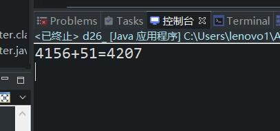

原文连接:https://www.cnblogs.com/ruigege0000/p/11470684.html
一、方法
1.返回值类型如果不是void，表示这个方法执行结束之后必须返回一个具体的数值，当方法执行结束的时候没有返回任何数值，编译器会报错，怎么返回值呢？并且要求“值”的数据类型必须和“方法的返回值类型”是一致的，不然编译器报错。
retuen 值；
2.返回值类型是void的时候，在方法体中不能编写"return 值；"这样的语句，但是要注意可以编写”return ；"这样的语句。
3.只要带有return关键字的语句执行，return语句所在的方法结束，（不是JVM结束，是所在的方法结束）
4.方法名的命名方式
（1）只要是合法的标识符就行
（2）方法名最好见名知义
（3）方法名最好的动词
（4）方法名首字母要求小写，后面每个单词首字母小写
5.形式参数列表：（简称形参）
（1）形参是局部变量
（2）形参的个数可以是0~N个，
（3）多个形参之间用”逗号“隔开
（4）形参中起决定性作用的是形参的数据类型，形参的名字就是局部变量的名字
（5）方法在调用的时候，实际给这个方法传递的真实数据被称为”实际参数“，简称实参
（6）实参和形参列表必须满足：数量相同；类型对应相同；
6.方法体必须由大括号括起来，方法体中的代码有顺序，遵循自上而下的顺序以此执行，并且方法体由java语句构成，每一个java语句是以”；“结尾的。
7.方法是怎么调用的？
方法只定义不去调用，是不会执行的，只有在调用的时候，才会执行
语法规则：
《方法的修饰符列表中有static》
类名.方法名（实参列表）；<这是一条java语句，表示调用某个类的某个方法，传递这样的参数。>
8.举例
public class d26_method_format_exercise{
//类体中不能直接写java语句，除了声明变量之外
public static void main(String[] args) {
//main：是主方法名。
//（string[] args)表示形式参数列表，其中String[]是一种引用数据类型，args是一个局部变量的变量名
//主方法就需要这样固定编写，这是程序的入口（sun公司就是这样规定的，必须这样写）
//主方法是JVM负责调用的，是一个入口位置
d26_.addTwoInteger(4156, 51);
}
public static void addTwoInteger(int a,int b) {
//自定义方法，不是程序的入口
//修饰符列表：public static
System.out.println(a + "+" + b + "=" + (a+b));
}
}
二、源码：
d26_method_format_exercise.java
地址：
https://github.com/ruigege66/Java/blob/master/d26_method_format_exercise.java
2.CSDN：https://blog.csdn.net/weixin_44630050（心悦君兮君不知-睿）
3.博客园：https://www.cnblogs.com/ruigege0000/
4.欢迎关注微信公众号：傅里叶变换，后台回复”礼包“，获取大数据学习资料